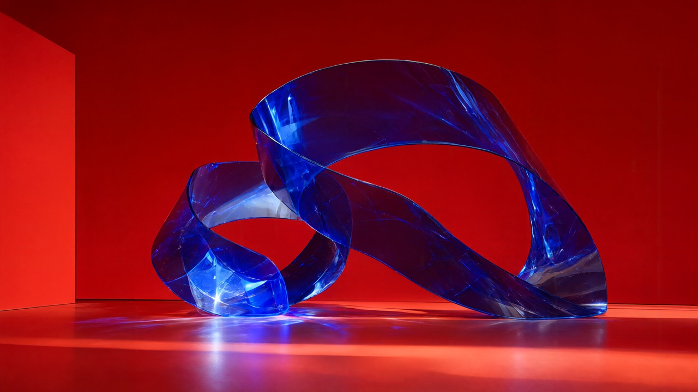

<!doctype html><html lang="zh-CN"><meta charset="utf-8"><meta name="viewport" content="width=device-width,initial-scale=1"><title>LuminaUI · 开屏设计预览</title><style>*{box-sizing:border-box}body{margin:0;min-height:100vh;background:#181819;color:#eee;font:16px/1.6 "Segoe UI","Microsoft YaHei",sans-serif;padding:4vh 4vw}header{font-weight:600;font-size:22px;letter-spacing:-1px}header span{font-weight:350;color:#999}main{max-width:1320px;margin:10vh auto}h1{font-weight:500;letter-spacing:-.04em}section{display:grid;grid-template-columns:repeat(3,1fr);gap:16px}a{min-width:0;color:inherit;text-decoration:none;border:1px solid #555;border-radius:12px;overflow:hidden;transition:transform .2s}a:hover,a:focus-visible{transform:translateY(-4px)}figure{margin:0;height:24vh;min-height:130px;display:grid;place-items:center}figure img{width:100%;height:100%;object-fit:cover}a:nth-child(2) figure{background:#f8f7f3}a:nth-child(2) img{width:38%;height:76%;border-radius:20px}a:nth-child(3) figure{background:linear-gradient(120deg,#dbecf6,#bdcee9)}figure b{height:80px;width:80px;border-radius:20%;background:linear-gradient(135deg,#adf0fe,#526aba);transform:rotateX(40deg) rotate(45deg);box-shadow:9px 9px #719dcc,18px 18px #6083b2}article{padding:18px 20px}h2{margin:0;font-weight:550;font-size:22px}p{margin:6px 0;color:#b5b7ba}@media(max-width:700px){section{grid-template-columns:1fr}main{margin:3vh auto}figure{height:140px}}</style><header>Lumina<span>UI</span></header><main><h1>选择一套开屏体验</h1><section><a href="first-run.html?design=gallery"><figure></figure><article><h2>作品展厅 ↗</h2><p>Adobe 创作工具参考 · 从作品进入画布。</p></article></a><a href="first-run.html?design=canvas"><figure></figure><article><h2>轻量画布 ↗</h2><p>Apple 引导原则参考 · 亲手试一次画幅。</p></article></a><a href="first-run.html?design=system"><figure><b></b></figure><article><h2>本地设置 ↗</h2><p>Microsoft Fluent 参考 · 分步准备本地环境。</p></article></a></section></main></html>
